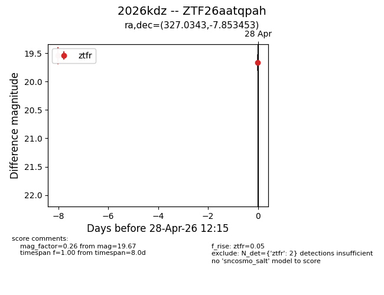
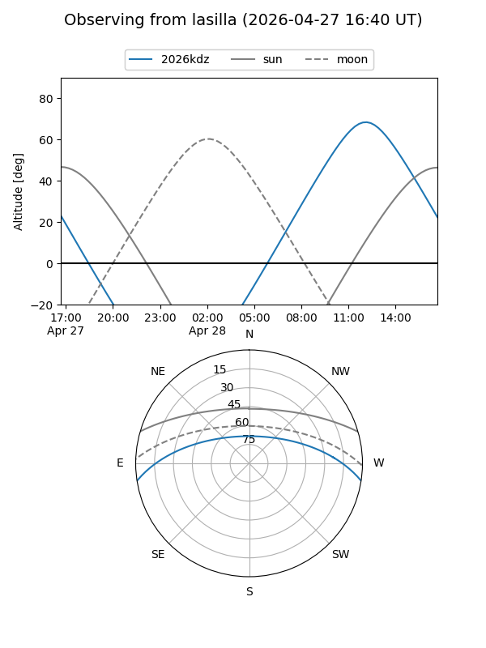
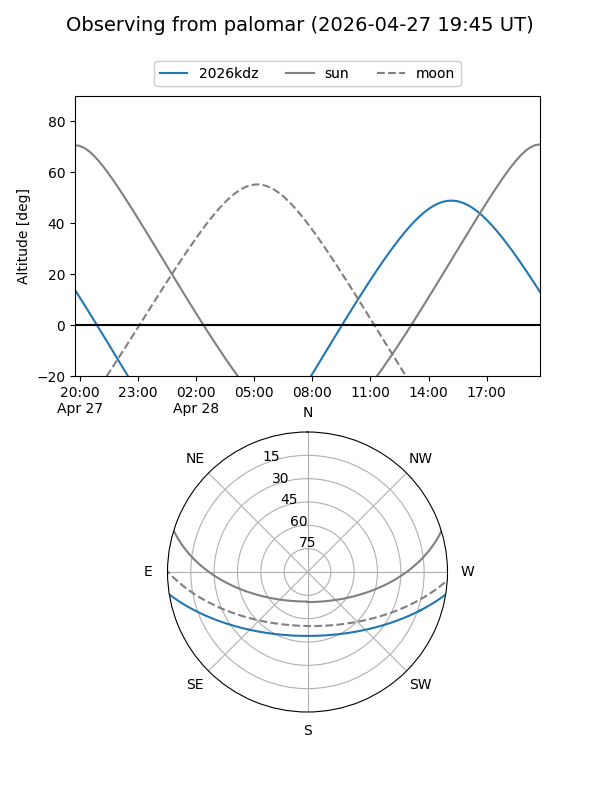

2026kdz
Target 2026kdz at 2026-04-28 12:16
Aliases and brokers:
FINK: link
Lasair: link
ALeRCE: link
TNS: link
YSE: link
alt names
ZTF26aatqpah (ztf,fink_ztf)
2026kdz (tns,yse)
Coordinates:
equatorial (ra, dec) = 327.0343,-7.85345
equatorial (HMS+DMS) = 21:48:08.24,-07:51:12.43
galactic (l, b) = (48.1416,-42.58453)
Flags:
Photometry:
last ztfr=19.67
2 ztfr detections
Lightcurve

Visibility


Additional plots